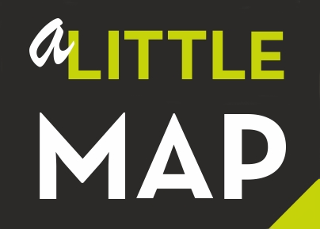

<html><script src="https://code.jquery.com/jquery-1.12.4.js"></script><script src="https://code.jquery.com/ui/1.12.1/jquery-ui.js"></script><script src="./scripts/script.js"></script>
<head><meta charset="utf-8">
	<link href="//code.jquery.com/ui/1.12.1/themes/base/jquery-ui.css" rel="stylesheet" />
	<link href="style.css" rel="stylesheet" type="text/css" />
</head>
<body class="homepage"></body>
</html>
<p><br />
<title>a little map</title>
</p>

<div id="primary">&nbsp;
<center>
<h1 class="header" id="header">a little map</h1>
</center>

<center></center>
</div>

<div class="nav" id="menu" width="80%">
<table align="center" id="table.menu">
	<tbody>
		<tr>
			<th><!-- <center><button id="about" onclick="alert('υπό κατασκευή');">Σχετικά με</button></center></th> --></th>
			<th>
			<center><button id="contact" onclick="location.href = 'mailto:e.arapostathis@gmail.com';">&Epsilon;&pi;&iota;&kappa;&omicron;&iota;&nu;&omega;&nu;ί&alpha;</button></center>
			</th>
		</tr>
		<tr>
			<th></th>
		</tr>
	</tbody>
</table>
</div>

<div class="main">
	<p>Η a little map είναι μια πολύ μικρή, ανεξάρτητη ερευνητική επιχείρηση με έδρα την Αθήνα. Ιδρύθηκε το 2018 με σκοπό να υποστηρίξει το ερευνητικό έργο του Σταθή Γ. Αραποστάθη, ερευνητή και προσφάτως καθηγητή στη δευτεροβάθμια εκπαίδευση. 
	Έκτοτε λειτουργεί με μικρά ως μέτρια αλλά σταθερά κέρδη, προσφέροντας ένα ευέλικτο πλαίσιο για έρευνα, συγγραφή και ψηφιακή διάδοση. 
	Κύρια πεδία ενδιαφέροντος περιλαμβάνουν τα Social Media, τη μηχανική εκμάθηση, τις φυσικές καταστροφές, τα γεγονότα κρίσεων, τα γεωγραφικά συστήματα πληροφοριών (GIS), την εθελοντική γεωγραφική πληροφορία (VGI), την τουριστική γεωγραφία και τη γεωπολιτική — τα οποία συχνά διερευνώνται από τη σκοπιά της πολιτικής συνάφειας και της ανοιχτής γνώσης. Οι ερευνητικές δραστηριότητες της a little map υποστηρίζονται από προηγμένη ψηφιακή υποδομή, με συνεχείς αναβαθμίσεις που εξασφαλίζουν ευελιξία, επεκτασιμότητα και συνέχεια ακόμη και υπό δύσκολες συνθήκες. Διατηρώντας την αυτονομία της, η a little map παραμένει ανοιχτή σε επιλεκτικές συνεργασίες, ειδικά όταν οι κοινοί στόχοι μπορούν να ενισχύσουν την εφαρμοσμένη, διεπιστημονική εργασία.
	</p>
	<p><ul>
<p>
Ενδεικτικοί ερευνητικοί τομείς ενδιαφέροντος:
<br>
<li>Επιστημονική έρευνα στα Social Media.</li>
<br>
<li>Φυσικές καταστροφές και γεγονότα κρίσεων.</li>
<br>
<li>Ερευνητικές δραστηριότητες σχετικά με τη γεωγραφία και το περιβάλλον.</li>
<br>
<li>Εκπαιδευτικές δραστηριότητες μέσω του διαδικτύου.</li>
<br>
<li>Έρευνα και τεχνολογία.</li>
<br>
<li>Τουριστική γεωγραφία.</li>

		
</ul></div>
<div class="article" id="initialParagraph">
<p id="intro"><br/>

</p>
<table id="intro">
	<tbody>
		<tr>
		</tr>
		<tr>
		</tr>
	</tbody>
</table>
</div>
</div>

<p></p>

<div id="footer">
<center>&nbsp;
<p id="copyrights"><i>a little map, Καλογρέζης 20, &Chi;&alpha;&lambda;ά&nu;&delta;&rho;&iota; <!--, 2ος όροφος, Διαμ. 1 --> Αριθμός ΓΕΜΗ:158949603000, Ιούλιος 2025</i></p>
</center>
</div>

<p></p>
